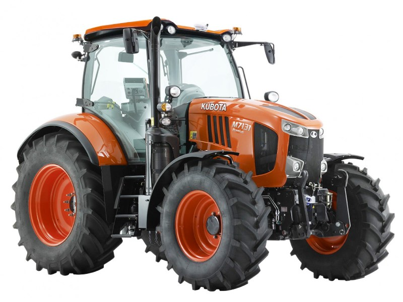

Kubota M7131

Kubota M7131 – це потужний професійний трактор, який став першим кроком японського бренду у сегмент важких сільськогосподарських машин. Трактор оснащений великим 4-циліндровим двигуном Kubota V6108 об'ємом 6,1 л, який видає номінальну потужність 130 к.с. Завдяки великому об'єму двигуна, машина має тягові характеристики, порівняні з конкурентами, при вищій маневреності та економічності.
Модель пропонує три варіанти комплектації: Standard, Premium та Premium KVT. Остання оснащена безступінчастою трансмісією, що забезпечує максимальну плавність ходу та ідеальний підбір швидкості. Кабіна трактора вирізняється високим рівнем комфорту, наявністю великого 12-дюймового терміналу K-Monitor (в топових версіях) та повним функціоналом для точного землеробства. Завдяки потужній задній навісці вантажопідйомністю до 9000 кг, M7131 легко справляється з важкими плугами та сучасними посівними комплексами.
| Характеристика | Значення |
|---|---|
| Клас тяги | 3.0 |
| Тип ходової частини | колісний |
| Колісна формула | 4х4 |
| Тип рами | жорстка конструкція |
| Основне призначення | енергоємні польові роботи, посів широкозахватними агрегатами, транспортні операції |
| Параметр | Значення |
|---|---|
| Модель | Kubota V6108-CR-TIE4 |
| Тип двигуна | 4-циліндровий, дизельний, з турбонаддувом та Common Rail |
| Спосіб охолодження | рідинне |
| Розташування циліндрів | рядне, вертикальне |
| Робочий об’єм | 6,1 л (6124 см³) |
| Номінальна потужність | 95,0 кВт (130,0 к.с.) |
| Максимальна потужність (з Boost) | 110,0 кВт (150,0 к.с.) |
| Максимальний крутний момент | 600 Н·м (при 1500 об/хв) |
| Номінальні оберти | 2100 об/хв |
| Очищення вихлопних газів | SCR, DPF, EGR, DOC (Stage IV) |
| Питома витрата (оптимальна) | 198 г/кВт·год |
| Параметр | Значення |
|---|---|
| Тип КПП | K-VT (безступінчаста) або Powershift (24F/24R) |
| Кількість передач (Powershift) | 6 ступенів Powershift у 4 діапазонах |
| Діапазон швидкості вперед | 0,02 – 50,0 км/год |
| Діапазон швидкості назад | 0,02 – 50,0 км/год |
| Тип зчеплення | багатодискове "мокре" з електрогідравлічним управлінням |
| Вал відбору потужності (ВВП) | 540 / 540E / 1000 / 1000E об/хв |
| Параметр | Значення |
|---|---|
| Тип коліс | пневматичні шини |
| Шини передні (стандарт) | 480/70 R28 |
| Шини задні (стандарт) | 580/70 R38 |
| Радіус ведучого колеса (заднього) | 0,885 м (Rw) |
| Колія передніх коліс | 1820 – 1920 мм |
| Колія задніх коліс | 1720 – 1920 мм |
| Кліренс (дорожній просвіт) | 530 мм |
| Підвіска переднього моста | гідропневматична (опція) |
| Режим роботи | Витрата, л/год |
|---|---|
| Важкі польові роботи (оранка, глибока культивація) | 22,5 – 26,8 л/год |
| Середні польові роботи (посів, дисковка) | 14,0 – 18,5 л/год |
| Легкі роботи (обприскування, міжрядний обробіток) | 9,5 – 12,0 л/год |
| Транспортні роботи (рух з причепом 40 км/год) | 11,5 – 15,0 л/год |
| Холостий хід (зупинки, робота з гідравлікою) | 1,6 – 2,1 л/год |
| Параметр | Значення |
|---|---|
| Експлуатаційна (робоча) вага | 6300 – 6600 кг |
| Максимально допустима вага | 11500 кг |
| Довжина / Ширина / Висота | 4770 / 2500 / 3050 мм |
| Колісна база | 2720 мм |
| Об’єм паливного баку | 330 л (+ 38 л AdBlue) |
| Параметр | Значення |
|---|---|
| Параметр | Значення |
| Гідравлічна система | Load Sensing (PFC), 110 л/хв |
| Вантажопідйомність навіски | 9000 кг |
| Максимальний тиск гідросистеми | 20,0 МПа |
| Керування | K-Monitor 7" або 12" |
| Особливості | Найбільший робочий об’єм серед 4-циліндрових двигунів у класі, що забезпечує стабільну тягу. Сумісність з системами точного землеробства (ISOBUS). |
Двигун великого об'єму (6,1 л): На відміну від конкурентів, які використовують менші двигуни з високим наддувом, Kubota використовує великий об'єм. Це дозволяє досягати максимального крутного моменту (600 Н·м) на низьких обертах, що суттєво знижує годинне споживання палива при тягових операціях.
Трансмісія K-VT (Kubota Variable Transmission): Безступінчаста коробка передач дозволяє двигуну завжди працювати в зоні найвищої паливної ефективності. Система автоматично знижує оберти до мінімально можливих, як тільки трактор досягає заданої робочої швидкості.
Система Power Boost: Трактор має номінальну потужність 130 к.с., але при пікових навантаженнях (робота з ВВП або транспорт) система додає до 20 к.с. Це дозволяє не тримати двигун постійно на високих обертах, економлячи паливо під час легших фаз роботи.
Екологічна система Stage IV: Використання SCR (AdBlue) дозволяє налаштувати двигун на більш "гаряче" та повне згоряння палива, що підвищує термодинамічний ККД двигуна.
Для нейтралізації оксидів азоту двигун використовує реагент AdBlue. Середня витрата становить приблизно 5–7% від об'єму витраченого дизельного палива. Завдяки великому паливному баку (330 л) та баку для реагенту (38 л), трактор здатний працювати довгу зміну без дозаправки.